History
"Tom and Jerry" was a commonplace phrase for young men given to drinking, gambling, and riotous living in 19th-century London, England. The term comes from Life in London; or, The Day and Night Scenes of Jerry Hawthorn, Esq., and his elegant friend, Corinthian Tom (1821) by Pierce Egan, the British sports journalist who authored similar accounts compiled as Boxiana. However Brewer notes no more than an "unconscious" echo of the Regency era, and thus Georgian era, origins in the naming of the cartoon
Timeline
1940-1958
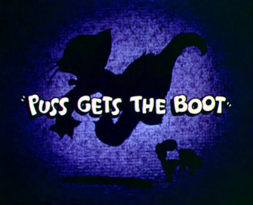In August 1937, animator and storyman Joseph Barbera began to work at MGM, then the largest studio in Hollywood. He learned that co-owner Louis B. Mayer wished to boost the animation department by encouraging the artists to develop some new cartoon characters, following the lack of success with its earlier cartoon series based on the Captain and the Kids comic strip. Barbera then teamed with fellow Ising unit animator and director William Hanna, who joined Harman-Ising Productions in 1930, and pitched new ideas, among them was the concept of two "equal characters who were always in conflict with each other". An early thought involved a fox and a dog before they settled on a cat and mouse. The pair discussed their ideas with producer Fred Quimby, then the head of the short film department who, despite a lack of interest in it, gave them the green-light to produce one cartoon short.
The first short, Puss Gets the Boot, features a cat named Jasper and an unnamed mouse, named Jinx in pre-production, and an African American housemaid named Mammy Two Shoes. Leonard Maltin described it as "very new and special that was to change the course of MGM cartoon production" and established the successful Tom and Jerry formula of comical cat and mouse chases with slapstick gags. It was released onto the theatre circuit on February 10, 1940. The pair, having been advised by management not to produce any more, focused on other cartoons including Gallopin' Gals (1940) and Officer Pooch (1941). Matters changed when Texas businesswoman Bessa Short sent a letter to MGM, asking whether more cat and mouse shorts would be produced, which helped convince management to commission a series.
A studio contest held to rename both characters was won by animator John Carr, who suggested Tom the cat and Jerry the mouse. Carr was awarded a first-place prize of $50, equivalent to $1,122 in 2024. It has been suggested, but not proven, that the names were derived from a 1932 story by Damon Runyon, who took them from the name of a popular Christmastime cocktail, itself derived from the names of two characters in an 1821 stage play by William Moncrieff, an adaptation of 1821 Egan's book titled Life in London where the names originated, which was based on George Cruikshank's, Isaac Robert Cruikshank's, and Egan's own careers. Puss Gets the Boot was a critical success, earning an Academy Award nomination for Best Short Subject: Cartoons in 1941 despite the credits listing Ising and omitting Hanna and Barbera.
After MGM gave the green-light for Hanna and Barbera to continue, the studio entered production on the second Tom and Jerry cartoon, The Midnight Snack (1941). The pair continued to work on the series for the next fifteen years of their career. The composer of the series, Scott Bradley, made it difficult for the musicians to perform his score which often involved the twelve-tone technique developed by Arnold Schoenberg. The series developed a quicker, more energetic and violent tone which was inspired by the work of MGM colleague Tex Avery. Hanna and Barbera made minor adjustments to Tom and Jerry's appearance so they would "age gracefully". Jerry lost weight and his long eyelashes, while Tom lost his jagged fur for a smoother appearance, had larger eyebrows, and received a white and gray face with a white mouth. He adopted a quadrupedal stance at first, like a real cat, to become increasingly and almost exclusively bipedal.
Hanna and Barbera produced 114 cartoons for MGM, thirteen of which were nominated for an Academy Award for Best Short Subject. Seven went on to win, breaking the winning streak held by Walt Disney's studio in the category. Tom and Jerry won more Academy Awards than any other character-based theatrical animated series. Barbera estimated the typical budget of $50,000 for each Tom and Jerry cartoon which made the duo take "time to get it right". A typical cartoon took around six weeks to make.
As per standard practice for American animation production at the time, Barbera and Hanna did not work with a script beforehand. After coming up with a cartoon idea together, Barbera would flesh out the story by drawing a storyboard and provide character designs and animation layouts. Hanna did the animation timing - planning the music and temporal beats and accents the animation action would occur on - and assigned the animators their scenes and supervised their work. Hanna provided incidental voice work, in particular Tom's numerous screams of pain. Despite minimal creative input, as head of the MGM cartoon studio, Quimby was credited as the producer of all cartoons until 1955.
The rise in television in the 1950s caused problems for the MGM animation studio, leading to budget cuts on Tom and Jerry cartoons due to decreased revenue from theatrical screenings. In an attempt to combat this, MGM ordered that all subsequent shorts be produced in the widescreen CinemaScope format. The first, Pet Peeve, was released in November 1954. The studio found that re-releases of older cartoons were earning as much as new ones, resulting in the executive decision to cease production on Tom and Jerry and later the animation studio on May 15, 1957. The final cartoon produced by Hanna and Barbera, Tot Watchers, was released on August 1, 1958. The pair decided to leave and went on to focus on their own production company Hanna-Barbera Productions, which went on to produce such popular animated television series including The Flintstones, Yogi Bear, The Jetsons and Scooby-Doo.
Production formats
Before 1954, all Tom and Jerry cartoons were produced in the standard Academy ratio and format. In 1954 and 1955, some of the output was dually produced in dual versions: one Academy-ratio negative composed for a flat widescreen (1.75:1) format and one shot in the CinemaScope process. From 1955 until the close of the MGM cartoon studio a year later, all Tom and Jerry cartoons were produced in CinemaScope. Some even had their soundtracks recorded in Perspecta directional audio. All of the Hanna and Barbera cartoons were shot as successive color exposure negatives in Technicolor.
1961-1962
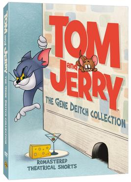In 1961, MGM revived the Tom and Jerry franchise, and contracted European animation studio Rembrandt Films to produce 13 Tom and Jerry shorts in Prague, Czechoslovakia. All were directed by Gene Deitch and produced by William L. Snyder. Deitch wrote most of the cartoons, with occasional assistance from Larz Bourne and Eli Bauer. Štěpán Koníček provided the musical score for the Deitch shorts. Sound effects were produced by electronic music composer Tod Dockstader and Deitch. The majority of vocal effects and voices in Deitch's films were provided by Allen Swift and Deitch.
Deitch states that, being a "UPA man", he was not a fan of the Tom and Jerry cartoons, thinking they were "needlessly violent". However, after being assigned to work on the series, he quickly realized that "nobody took [the violence] seriously", and it was merely "a parody of exaggerated human emotions". He also came to see what he perceived as the "biblical roots" in Tom and Jerry's conflict, similar to David and Goliath, stating "That's where we feel a connection to these cartoons: the little guy can win (or at least survive) to fight another day."
Since the Deitch/Snyder team had seen only a handful of the original Tom and Jerry shorts, and since the team produced their cartoons on a tighter budget of $10,000, the resulting films were considered surrealist in nature, though this was not Deitch's intention. The animation was limited and jerky in movement compared to the more fluid Hanna-Barbera shorts, and often utilized motion blur. Background art was done in a more simplistic, angular, Art Deco-esque style. The soundtracks featured sparse and echoic electronic music, futuristic sound effects, heavy reverb and dialogue that was mumbled rather than spoken. According to Jen Nessel of The New York Times, "The Czech style had nothing in common with these gag-driven cartoons."
Whereas Hanna-Barbera's shorts generally took place in and outside of a house, Deitch's shorts opted for more exotic locations, such as a 19th-century whaling ship, the jungles of Nairobi, an Ancient Greek acropolis, or the Wild West. In addition, Mammy Two Shoes was replaced as Tom's owner by a bald, overweight, short-tempered, middle-aged white man, who bore a striking resemblance to another Deitch character, Clint Clobber. Just like Spike the Bulldog, he was also significantly more brutal and violent in punishing Tom's actions as compared to previous owners, often beating and thrashing Tom repeatedly; the character and his extreme treatment of Tom was poorly received.
To avoid being linked to Communism, Deitch modified the Czech names of his crew in the opening credits of the shorts to look more conventional to English-speaking audiences, e.g. Štěpán Koníček became "Steven Konichek" and Václav Lídl became "Victor Little". These shorts are among the few Tom and Jerry cartoons not to carry the "Made In Hollywood, U.S.A." phrase on the end title card. Due to Deitch's studio being behind the Iron Curtain, the production studio's location is omitted entirely on it. After the 13 shorts were completed, Joe Vogel, the head of production, was fired from MGM. Vogel had approved of Deitch and his team's work, but MGM decided not to renew their contract after Vogel's departure. The final of the 13 shorts, Carmen Get It!, was released on December 21, 1962.
Deitch's shorts were commercial successes. In 1962, the Tom and Jerry series became the highest-grossing animated short film series of that time, dethroning Looney Tunes, which had held the position for 16 years. However, unlike the Hanna-Barbera shorts, none of Deitch's films were nominated for any Academy Awards. In retrospect, these shorts are often considered the worst of the Tom and Jerry theatrical output. Deitch stated that due to his team's inexperience as well as their low budget, he "hardly had a chance to succeed", and "well understand[s] the negative reactions" to his shorts. He believes "They could all have been better animated – truer to the characters – but our T&Js were produced in the early 1960s, near the beginning of my presence here, over a half-century ago as I write this!" Despite the criticism, Deitch's Tom and Jerry shorts are appreciated by some fans due to their uniquely surreal nature. The shorts were released on DVD in 2015 in "Tom and Jerry: The Gene Deitch Collection".
Production formats
The 1960s entries were done in Metrocolor but returned to the standard Academy ratio and format
1963-1967
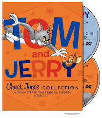After the last of the Deitch cartoons were released, Chuck Jones, who had been fired from his 30-plus year tenure at Warner Bros. Cartoons, started his own animation studio, Sib Tower 12 Productions (later renamed MGM Animation/Visual Arts), with partner Les Goldman. Beginning in 1963, Jones and Goldman went on to produce 34 more Tom and Jerry shorts, all of which carried Jones' distinctive style, and a slight psychedelic influence.
Jones had trouble adapting his style to Tom and Jerry's brand of humor, and a number of the cartoons favored full animation, personality and style over storyline. The characters underwent a slight change of appearance: Tom was given thicker eyebrows (resembling Jones' Grinch, Count Blood Count or Wile E. Coyote), a less complex look (including the color of his fur becoming gray), sharper ears, longer tail and furrier cheeks (resembling Jones' Claude Cat or Sylvester), while Jerry was given larger eyes and ears, a lighter brown color, and a sweeter, Porky Pig-like expression.
Some of Jones' Tom and Jerry cartoons are reminiscent of his work with Wile E. Coyote and the Road Runner, included the uses of blackout gags and gags involving characters falling from high places. Jones co-directed the majority of the shorts with layout artist Maurice Noble. The remaining shorts were directed by Abe Levitow and Ben Washam, with Tom Ray directing two shorts built around footage from earlier Tom and Jerry cartoons directed by Hanna and Barbera, and Jim Pabian directed a short with Maurice Noble. Various vocal characteristics were made by Mel Blanc, June Foray and even Jones himself. These shorts contain a memorable opening theme, in which Tom first replaces the MGM lion, then is trapped inside the "O" of his name.
Though Jones's shorts were generally considered an improvement over Deitch's, they had varying degrees of critical success. MGM ceased production of Tom and Jerry shorts in 1967, by which time Jones had moved on to television specials and the feature film The Phantom Tollbooth. The shorts were released on DVD in 2009 on Tom and Jerry: The Chuck Jones Collection.
1965-1972
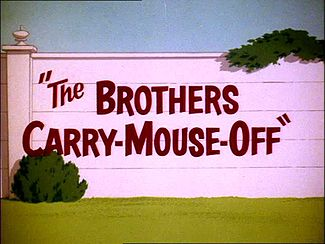Beginning in 1965, the Hanna and Barbera Tom and Jerry cartoons began to appear on television in heavily edited versions. The Jones team was required to take the cartoons featuring Mammy Two Shoes and remove her by pasting over the scenes featuring her with new scenes. Most of the time, she was replaced with a similarly fat white Irish woman. Occasionally, as in Saturday Evening Puss, a thin white teenager took her place instead, with both characters voiced by June Foray.
Recent telecasts on Cartoon Network and Boomerang retain Mammy with new voiceover work performed by Thea Vidale to remove the stereotypical black jargon featured on the original cartoon soundtracks. The standard Tom and Jerry opening titles were removed as well. Instead of the roaring MGM Lion sequence, an opening sequence featuring different clips of the cartoons was used instead. The title cards were also changed. A pink title card with the name written in white font was used instead.
Debuting on CBS' Saturday morning schedule on September 25, 1965, Tom and Jerry moved to CBS Sundays in 1967 and remained there until September 17, 1972.
1975–1977
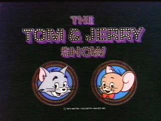In 1975, Tom and Jerry were reunited with Hanna and Barbera, who produced The Tom and Jerry Show for Saturday mornings. These 48 seven-minute cartoon shorts were paired with Grape Ape and Mumbly cartoons, to create The Tom and Jerry/Grape Ape Show, The Tom and Jerry/Grape Ape/Mumbly Show, and The Tom and Jerry/Mumbly Show, all of which initially ran on ABC Saturday mornings between September 6, 1975, and September 3, 1977. In these cartoons, Tom and Jerry, now with a red bow tie, who had been enemies during their formative years, became nonviolent pals who went on adventures together, as Hanna-Barbera had to meet the stringent rules against violence for children's TV. This format has not been used in newer Tom and Jerry entries.
1980–1982
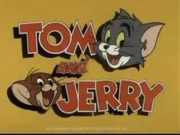Filmation Studios were commissioned by MGM Television to produce a Tom and Jerry TV series, The Tom and Jerry Comedy Show, which debuted in 1980 and featured new cartoons starring Droopy, Spike, Slick Wolf, and Barney Bear, not seen since the original MGM shorts. The Filmation Tom and Jerry cartoons were noticeably different from Hanna-Barbera's efforts, as they returned Tom and Jerry to the original chase formula, with a somewhat more "slapstick" humor format. This incarnation, much like the 1975 version, was not as well received by audiences as the originals, and lasted on CBS Saturday mornings from September 6, 1980, to September 4, 1982.
In 1986, MGM was purchased by WTBS founder Ted Turner. Turner sold the company a short while later, but retained MGM's pre-1986 film library. Tom and Jerry became the property of Turner Entertainment Co., where the rights stand today via Warner Bros., and have in subsequent years appeared on Turner-run stations, such as TBS, TNT, Cartoon Network, The WB, Boomerang, and Turner Classic Movies.
1990–1994
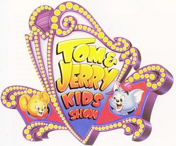One of the biggest trends for Saturday morning television in the 1980s and 1990s was the "babyfication" (child versions) of classic cartoon stars. On March 2, 1990, Tom & Jerry Kids, co-produced by Turner Entertainment Co. and Hanna-Barbera Productions, which was sold to Turner in 1991, debuted on Fox Kids, and aired for a few years on British children's block, CBBC. It featured a youthful version of the famous cat-and-mouse duo chasing each other. As with the 1975 H-B series, Jerry wears his red bowtie, while Tom now wears a red cap. Spike and his son Tyke, who now had talking dialogue, and Droopy and his son Dripple, appeared in back-up segments for the show, which ran until November 18, 1994. Tom & Jerry Kids was the last Tom and Jerry cartoon series produced in 4:3 (full screen) aspect ratio.
2001-2005
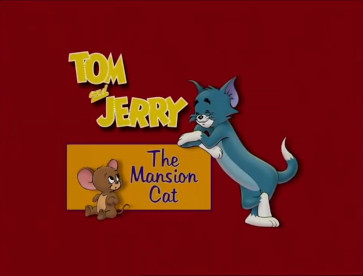In 2001, a new television special titled Tom and Jerry: The Mansion Cat premiered on Boomerang. It featured Joe Barbera (who was also a creative consultant) as the voice of Tom's owner, whose face is never seen. In this cartoon, Jerry, housed in a habitrail, is as much of a house pet as Tom is, and their owner has to remind Tom to not "blame everything on the mouse".
In 2005, a new Tom and Jerry theatrical short, titled The Karate Guard, which had been written and directed by Barbera and Spike Brandt, storyboarded by Joseph Barbera and Iwao Takamoto and produced by Joseph Barbera, Spike Brandt, and Tony Cervone premiered in Los Angeles cinemas on September 27, 2005, as part of the celebration of Tom and Jerry's sixty-fifth anniversary. This marked Barbera's first return as a writer, director and storyboard artist on the series since his and Hanna's original MGM cartoon shorts, and last overall. He died shortly after production ended. Director/animator, Spike Brandt was nominated for an Annie award for best character animation. The short debuted on the Cartoon Network on January 27, 2006. The short was filmed in the standard Academy ratio and format.
2006–present
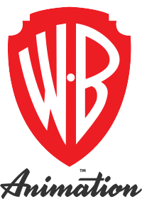In 1996, Turner merged with Time Warner, the parent company of Warner Bros. The characters from the MGM library, including Tom and Jerry, were placed under the control of Warner Bros. Animation. A relaunch of the theatrical shorts series was planned for 2003 alongside a similar relaunch of the Looney Tunes theatrical shorts, but was canceled after the financial failure of Looney Tunes: Back in Action.
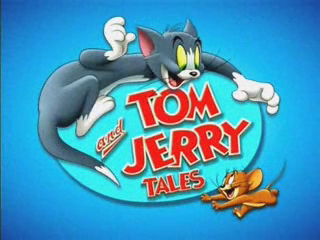In 2006, a new series called Tom and Jerry Tales premiered. Thirteen half-hour episodes each consisting of three shorts were produced. Some of the segments, like The Karate Guard, had originally been produced and completed in 2003 as part of the planned theatrical cartoon relaunch. The show debuted in markets outside the US and UK, before premiering in February 2006 on the UK version of Boomerang, and the following autumn in the US on Kids' WB on The CW. Tales is the first Tom and Jerry TV series that utilizes the original style of the classic shorts, along with the slapstick. Tales is the first Tom and Jerry production produced in 16:9 widescreen aspect ratio, but was cropped to 4:3 fullscreen aspect ratio when initially aired on in the United States. The series was canceled in 2008, shortly before the Kids' WB block shut down.
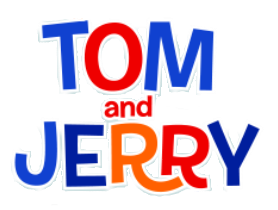Cartoon Network, which began rerunning Tom and Jerry Tales in January 2012, subsequently launched a series titled The Tom and Jerry Show consisting of two 11-minute shorts, later produced as separate 7-minutes length episodes, per episode that likewise sought to maintain the look, core characters and sensibility of the original theatrical shorts. Similar to other reboot works like Scooby-Doo! Mystery Incorporated and New Looney Tunes, several episodes the new series brought Tom and Jerry into contemporary environments, telling new stories and relocating the characters to more fantastic worlds, from a medieval castle to a mad scientist's lab. The series was produced by Warner Bros. Animation, with Sam Register serving as executive producer in collaboration with Darrell Van Citters and Ashley Postlewaite at Renegade Animation. Originally slated for a 2013 Cartoon Network premiere, the series was pushed back to April 9, 2014. It is the second Tom and Jerry production presented in 16:9 widescreen aspect ratio.
In November 2014, a two-minute sketch was shown as part of the Children in Need telethon in the United Kingdom. The sketch was produced as a collaboration with Warner Bros.
In May 2016, WB Kids began releasing excerpts from various Tom and Jerry works to the online platform YouTube. By January 2017, compilation videos of the Tom and Jerry franchise began to be released by WB Kids on the platform.
On February 20, 2021, Warner Bros. released two new shorts onto HBO Max titled Tom and Jerry Special Shorts to honor the 81st anniversary of Tom and Jerry, as well as to promote the 2021 film. These shorts share the style of the other HBO Max original Looney Tunes Cartoons, also produced by Warner Bros. Animation.
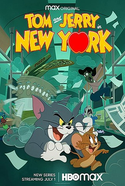A new Tom and Jerry series made its debut on July 1, 2021, as a Max Original on HBO Max, called Tom and Jerry in New York, which basically served as a spin-off of The Tom and Jerry Show by having the exact same animation style and slapstick, except that the events take place in the city of New York City. It was loosely based on the 2021 film, as the humans in the series were shown with the faces intact.
On November 11, 2022, Cartoon Network in Japan premiered a new series of animated shorts, Tom and Jerry (Japanese: とむとじぇりー, romanized: Tomu to Jerī[a]), marking the first Japanese production based on the property. Featuring the voices of Megumi Aratake (as Tom), Aya Yonekura (as Jerry) and Eri Tanaka (as Tuffy), the shorts were animated by Fanworks in co-operation with Studio Nanahoshi. Ayu handled the character design and Captain Mirai composed the musical scores. The November 11, 2022 premiere coincided with Cartoon Network's celebration of Cheese Day, which is organized by cheese industry in Japan.
On July 25, 2023, the Southeast Asian version of Tom and Jerry animated shorts was announced, to be presented on Cartoon Network Asia alongside HBO Asia streaming platform HBO GO before it was aired globally. The animated shorts, which was set in Singapore, was produced by Warner Bros. Discovery Asia-Pacific's director of original kids content Carlene Tan, with animation by Aum Animation Studios India alongside Singapore-based Robot Playground Media and Chips and Toon Studios for both the stories and designs.
Outside of the United States
United Kingdom
When shown on terrestrial television in the United Kingdom, from April 1967 to February 2001, usually on the BBC, Tom and Jerry cartoons were not edited for violence, and Mammy was retained. As well as having regular slots, mainly after the evening BBC News with around two shorts shown every evening and occasionally shown on children's network CBBC in the morning, Tom and Jerry served the BBC in another way. When faced with disruption to the schedules, for example when live broadcasts overran, the BBC would invariably turn to Tom and Jerry to fill any gaps, confident that it would retain much of an audience that might otherwise channel hop. This proved particularly helpful in 1993, when Noel's House Party had to be cancelled due to an IRA bomb scare at BBC Television Centre. Tom and Jerry was shown instead, bridging the gap until the next programme. In 2006, a mother complained to Ofcom about the smoking shown in the cartoons, since Tom often attempts to impress love interests with the habit, resulting in reports that the smoking scenes in Tom and Jerry films may be subject to censorship.
Japan
Due to its very limited use of dialogue, Tom and Jerry was easily translated into various foreign languages. Tom and Jerry began broadcast in Japan in 1965. A 2005 nationwide survey taken in Japan by TV Asahi, sampling age groups from teenagers to adults in their sixties, ranked Tom and Jerry No. 85 in a list of the top 100 "anime" of all time. Their web poll taken after the airing of the list ranked it at No. 58 – the only non-Japanese animation on the list, and beating anime classics like Tsubasa: Reservoir Chronicle, A Little Princess Sara, and the ultra-classics Macross and Ghost in the Shell. In Japan, the word "anime" refers to all animation regardless of origin, not just Japanese animation.
Tom and Jerry serve as the long-time licensed mascots for Gifu-based Juroku Bank. Unlike some other Western cartoons such as Bob the Builder, whose characters had to be doctored to have five fingers in each hand instead of the original four, Tom and Jerry aired in Japan without such edits, as did other series starring non-human protagonists such as SpongeBob SquarePants.
Indonesia
In Indonesia, the series was aired on TPI (later re-branded as MNCTV) from the mid-1990s to early 2010s and RCTI during 2000s.
China
The show was aired in mainland China by CCTV in the mid-1980s to the early 1990s and was extremely popular at the time. Collections of the show are still a prominent feature in Chinese book stores.
Germany
Tom and Jerry have long since been popular in Germany. The different shorts are usually linked together with key scenes from Jerry's Diary (1949), in which Tom reads about his and Jerry's past adventures. The cartoons are introduced with rhyming German language verse, and when necessary, a German voice spoke the translations of English labels on items and similar information.
Czechoslovakia
Even though Gene Deitch's shorts were created in Czechoslovakia (1960–1962), the first official TV release of Tom and Jerry were in 1988. It was one of the few cartoons of western origin broadcast in Czechoslovakia (1988) and Romania (until 1989) before the fall of the Soviet Union in 1989.
Philippines
In the Philippines, the series was aired on ABS-CBN from 1966 until its closure due to the country's declaration of martial law in 1972, with the later Hanna-Barbera shorts from Barbecue Brawl to Tot Watchers and all of Gene Deitch and Chuck Jones shorts. RPN aired most of Hanna-Barbera shorts from 1977 until 1989. ABS-CBN would later return to the air after the restoration of democracy in 1986 and air the same shorts as in the pre-martial law era. This lasted until the end of 1988.